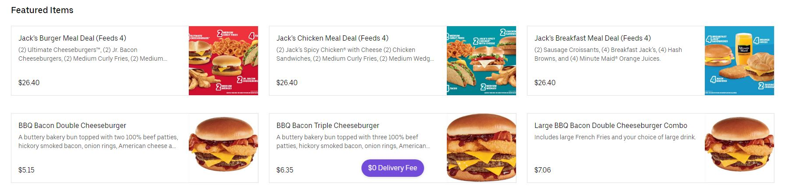

The site I wanted to evaluate was Uber Eats as it is a food delivery service application that has seen an increase in usage since the COVID pandemic. Identifying what works and what can be improved will better enhance the user experience
Link to ubereats.com, the source of this heuristic evaluation
#1 Visibility of system status
The Uber Eats browser when loading each web page utilizes two different loading animations in order to inform the customers that the site and food options are being loaded and to wait for the load. The first loading animation shown in the image above is a circle load animation, with the second version of loading shows the shadow of all the loading images greyed out with a sort of simmer that flashes above each greyed out box.

#2 Match between system and the real world
Since Uber Eats is copying the descriptions of each food item from their respective restaurants, the descriptions are nearly exactly what is said from the original restaurant. The customers will know exactly what they are getting. There are no technical terms here except for everyday used languages when customizing your order like "50% pickles" or "small, medium, large" for fries. This makes it so the user knows exactly what they are getting when they order their food.
#3 User control and freedom
Uber Eats utilizes quantity options that allow users to edit the number of items or remove items from their order if they accidentally chose the wrong order or need more. The site also has frequent edit buttons that occur during the entire ordering process and summary letting the user know they can fix or change anything in their order at anytime, visually letting them undo any mistakes that might have occurred
#4 Consistency and standards
The words shown on the top bar of Uber Eats is consistent and true to the meaning of their words. For example, when you click on search you expect to be able to type into the search bar for your restaurant or food and it does indeed do that. The icons also shown like the clock, profile image, magnifying glass are all images associated with what they do in other sites that utilize these symbols so users should have a sense of familiarity even without ever using the site on what each function does.
#5 Error prevention
Since Uber Eats is copying the descriptions of each food item from their respective restaurants, the descriptions are nearly exactly what is said from the original restaurant. The customers will know exactly what they are getting. The user when searching for their desired items, can mispell, the site offers suggestions based on matching words in similarity allowing the user ease-of-burden when typing. There are no technical terms here except for everyday used languages when customizing your order like "50% pickles" or "small, medium, large" for fries. This makes it so the user knows exactly what they are getting when they order their food.
#6 Recognition rather than recall
After picking all of the items that the customer wants to order, they are brought to an order summary page that allows them to review their entire order with all their changes and edits to their order. Users are also presented with their search history in the search bar to quickly navigate to previous locations and foods or showing best-matched words in case they mispell something
#7 Flexibility and efficiency of use
This is also associated with the image for #6 as there are function on Uber eats that allow for quick reordering of items. This allows the user to skip going through the hassle of editting and choosing their order again if they have been to the restaurant previously and know what they want everytime. Furthermore, the site also lists the previous orders they had and from which restaurant/location to indicate to the user if they want to retry again or perhaps try a different location or restaurant.
#8 Aesthetic and minimalist design
The overall interface is very clean, there is little clutter or unnecessary information that detracts from the main purpose of the site, which is to order from local restaurants for food. For example, it has different sections for restaurants, or different categories for food to click on. The images portray exactly what the labels are and the site is easily navigate-able.
#9 Help users recognize, diagnose, and recover from errors
I found the biggest fault of the site being in the way that they handle errors (or the lack thereof). When there is an error, the site only regurgitates what the error exactly is. For example, if the page cannot load, it just says "the page cannot load" with no fixes. One error I found which could be major is that when ordering food for a different day, say like 9AM tomorrow, the site does not allow you to pick from the restaurant's breakfast menu despite showing that you should be able to, this can be easily translated to lsot revenue for that local restaurant as a result of Uber Eats not fixing these kinds of errors.
#10 Help and documentation
The website does have a link in the gear options menu that takes the user to their help data bse. Here, they document almost all issues that the user may encounter and as a result, who to contact, or what to do.